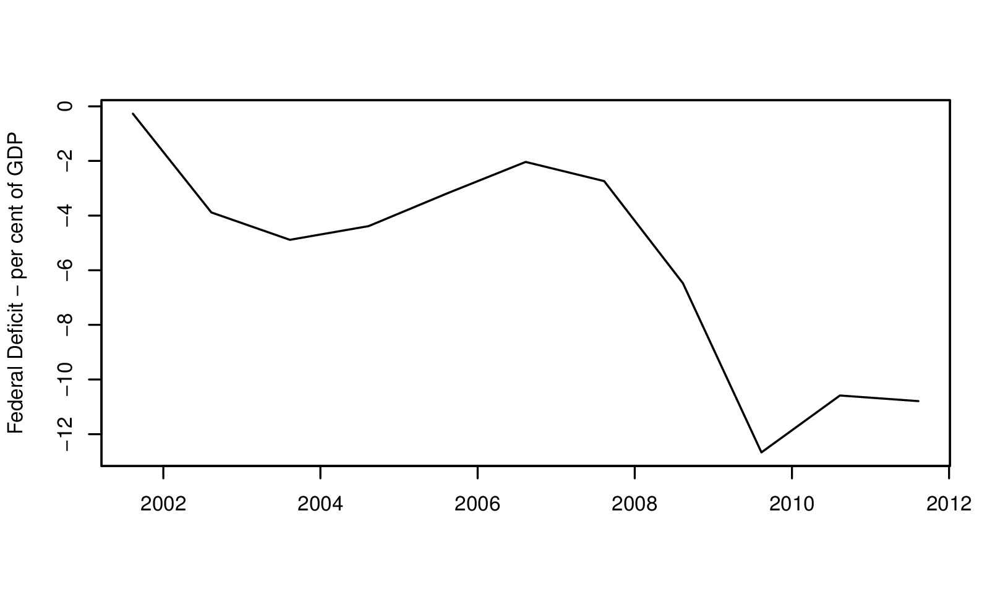
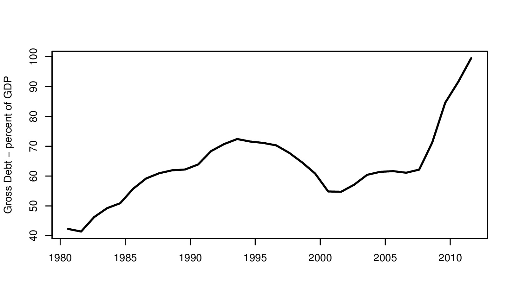
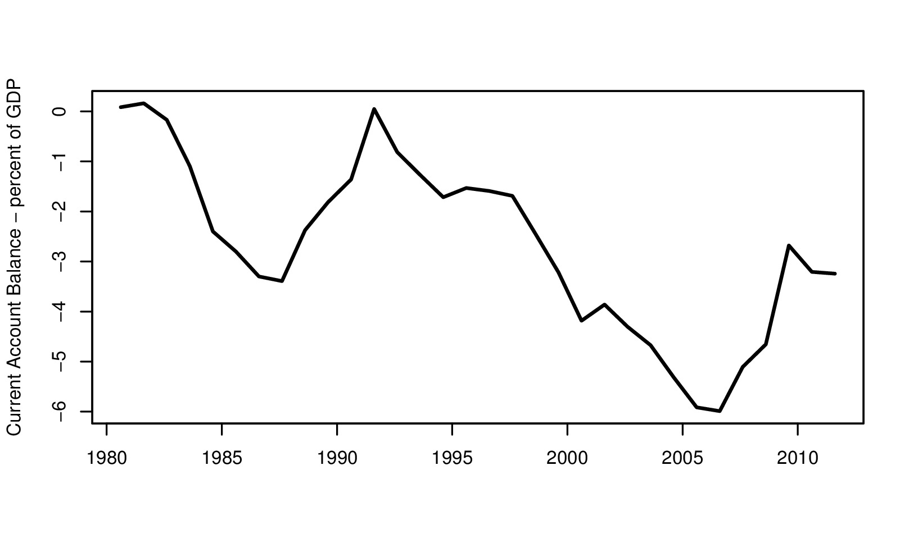

As the debt piles up...
Financial Express, 13 August 2011
The US fiscal crisis
From the early 1990s onwards, in the so called `Bill Clinton Expansion', the US had a strong fiscal situation. High economic growth coupled with small welfare programs and young demographics helped ensure that the US avoided the sclerosis that afflicted continental Europe where all three factors played in reverse (ageing population, large welfare programs, low economic growth).
Conditions changed dramatically after 2001. On one hand, the world economy encountered a brief recession in 2001 and then a severe downturn after 2008. In addition, US military expenditures rose sharply after the 9/11 attacks.
 The graph shows the US fiscal deficit, which first enlarged after the start of wars in Iraq and Afghanistan, and the 2001 recession, to values like 5 per cent of GDP in 2004. The global expansion led to a narrowing of the deficit to roughly 2 per cent in 2007.
After that, there has been a truly dramatic increase in the deficit to persistent values like 10 per cent. This has reflected some automatic stabilisers (such as reduction in tax revenues of the government, and expenditures on welfare programs). It has also reflected a tax cut which was undertaken in order to prop up consumption.
 Even though interest rates are very low, these large fiscal deficits coupled with slow economic growth has given a surge in debt. The graph above shows the debt/GDP ratio. The Bill Clinton Expansion generated a nice reduction in debt from over 70 per cent of GDP to a low of 60 per cent of GDP. The recent years have seen a huge escalation of debt from roughly 65 per cent of GDP to 100 per cent of GDP.
 The US is an open economy. In an open economy, other things being equal, an increase in the deficit tends to get financed by an increase in capital inflows. As an accounting identity, the current account deficit is always equal to capital inflows. The graph above shows the current account deficit of the US. Most economists believe that such large current account deficits are not sustainable for the US. The capital that comes into a country today has to be matched by an outflow of interest, dividends and repayments tomorrow. Under reasonable projections, a sustainable US current account deficit is between 2 to 3 per cent. The large and sustained US current account deficit is one international manifestation of the US fiscal crisis.
The last troublesome element of the US fiscal situation is that in the medium term, it is likely to get much worse. The Congressional Budget Office (CBO) makes painstaking projections for 2035, which is roughly 25 years or one generation from now. Their `Alternative Fiscal Scenario' (which is the most likely one) shows a rise of debt to 187 per cent by 2035. This is simply untenable.
Things that can't go on don't. US fiscal policy is on an unsustainable path and taxation or expenditure have to change. The nice thing about the US, atleast when compared with India, is that politicians understand that the fiscal situation is untenable and are starting to grapple with it. In contrast, in India, when the fiscal position is unsustainable, most MPs are ignorant or unconcerned.
The loud scenes on Capital Hill are a precusor to the difficulties that will be faced in coming years, where taxes have to go up and expenditures have to go down, in order to get to CBO projections for 2035 to a number of below 60 per cent of GDP.
Broadly speaking, the Democrats advocate fiscal progress by raising taxes, and the Republicans advocate fiscal progress by cutting expenditures. A political conflict is playing out about how the two elements should be combined to get the fiscal situation back into balance.
The US political establishment deserves criticism for having let matters come to such a pass. They also deserve praise for understanding that this is a fiscal crisis, and for trying to find their way out of it. Democracy is a messy form of government, and there will be a lot of sound and fury in public domain before answers are found. It is likely that answers will be found.
The answers will inexorably involve some more taxation and some reductions in expenditure. These have a direct implications for the US consumer. When the layman in the US saw television coverage of the conflict in Congress on debt limits, of the downgrade by S&P, and of the consequences of fiscal mistakes in Europe, he would be right to anticipate somewhat higher taxation and somewhat reduced government spending in coming years. This is likely to make the US consumer less inclined to buy his third car and his fourth flatscreen television screen. When the mighty US consumer pulls back on spending, the echo of this is heard throughout the world. That was why global markets were thrown into turmoil by these developments.
Back up to Ila Patnaik's media page
Back up to Ila Patnaik's home page